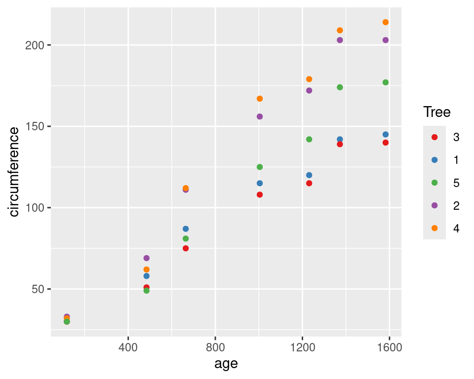
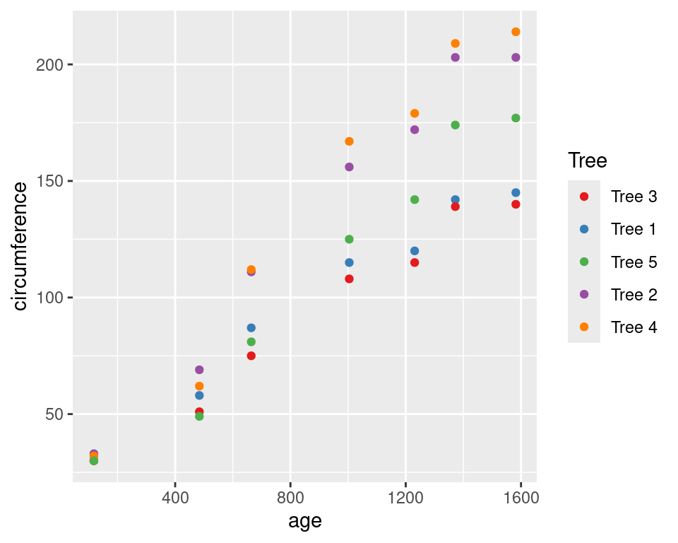

library(tidyverse)Functions and Iteration
RAdelaide 2024
Dr Stevie Pederson
Black Ochre Data Labs
Telethon Kids Institute
Telethon Kids Institute
July 10, 2024
Functions
Functions
- Now familiar with using functions
- Writing our own functions is an everyday skill in
R - Sometimes complex \(\implies\) usually very simple
- Mostly “inline” functions for simple data manipulation
- Very common for axis labels in
ggplot()
- Very common for axis labels in
A Quick Example

- Let’s say that we wish to add the prefix ‘Tree’ to the legend
A Quick Example

\(x)is shorthand forfunction(x)(since R v4.1)- All labels are passed to the function as
x
Inline Functions
- This is often referred to as an inline function
- Usually very simple, single line functions
- Often
\(x)usingxas the underlying value
- Often
- We could’ve modified the underlying data (but didn’t)
- Also very useful when using
mutate()to modify columns
Inline Functions
- A common step I use when modifying labels might be
Understanding Functions
A function really has multiple aspects
- The
formals()\(\implies\) the arguments we pass - The
body()\(\implies\) the code that does stuff - The
environment()where calculations take place
Let’s look through sd() starting at the help page ?sd
Understanding Functions
- These are the arguments (or formals) required by the function
na.rmhas a default value (FALSE)
Understanding Functions
Writing Our Function
- Let’s write that function for modifying labels
- Start by deciding what the function might be called
- Also what arguments we need
Writing Our Function
- The first step is to change
"_"to spaces- The last line of a function will be returned by default
Writing Our Function
- We’re going to modify that again \(\implies\) let’s form an object
- Then return the new object
Writing Our Function
- Why are we referring to
flagstatsasx?
- When we pass it to the function is temporarily renamed
x
\(\implies\) But where is it called x?
- Each function has it’s own internal environment
- Nested within the
GlobalEnvironmentbut like “a separate bubble”
- Nested within the
Writing Our Function
- To complete the function
modify_labels <- function(x) {
new_x <- str_replace_all(x, "_", " ") # Replace all '_' with spaces
new_x <- str_to_title(new_x) # Start each word with an uppercase letter
new_x <- str_wrap(new_x, width = 12) # Add line breaks after 12 characters
new_x # Return our final object
}
modify_labels(flagstats)[1] "Properly\nPaired Reads" "Unique\nAlignments" Extending Our Function
- Can we also control the width at which the text wraps
- Hard-wired to
12internally
- Hard-wired to
- Add an extra argument called
widthwith default value of 12- Now this can be changed any time we call the function
modify_labels <- function(x, width = 12) {
new_x <- str_replace_all(x, "_", " ") # Replace all '_' with spaces
new_x <- str_to_title(new_x) # Start each word with an uppercase letter
new_x <- str_wrap(new_x, width = width) # Add line breaks where requested
new_x # Return our final object
}
modify_labels(flagstats)[1] "Properly\nPaired Reads" "Unique\nAlignments" [1] "Properly Paired Reads" "Unique Alignments" Extending Our Function
- In many help pages \(\implies\)
...as a function argument - This allows for passing arguments to internal function calls
- Are not required to be set specifically
- Check the help page
?str_wrap
- Notice there are four additional arguments:
width,indent,exdentandwhitespace_only
Extending Our Function
- Let’s remove width from our list of formal arguments
- Replace with
... - Pass
...insidestr_wrap
modify_labels <- function(x, ...) {
new_x <- str_replace_all(x, "_", " ") # Replace all '_' with spaces
new_x <- str_to_title(new_x) # Start each word with an upper-case letter
new_x <- str_wrap(new_x, ...) # Add line breaks where requested
new_x # Return our final object
}
modify_labels(flagstats)
modify_labels(flagstats, width = 12)
modify_labels(flagstats, width = 12, indent = 5)Iteration
Iteration
Rsees everything as vectors- We didn’t need to modify each value of
flagstats- Not the case for most languages
python,C,C++,perletc step through vectors
\(\implies\)process one value at a time
Iteration
[1] "properly_paired_reads"
[1] "unique_alignments"- Each value was called x as we stepped through it
xis just a convention \(\implies\) can be anything (i,bobetc)
Iteration
- Because
Rworks on vectors
\(\implies\) almost never need to iterate on vectors
- Lists however…
- How would we get the length for each list element?
Iteration is probably our first, best guess…
Iteration
# Never do this. It's just an example...
len <- c() # Initialise an empty object
for (x in vals) { # Step through 'vals' calling each element 'x'
len <- c(len, length(x)) # Add the values as we step through
}
len[1] 26 1000The above:
- Initialises an empty vector
len - Steps through each element calling it
x - Finds the length of
xand extendslen
The R Way to Iterate
- Conventional iteration is very slow in
R - Provides the function
lapply- Stands for list apply
- Applies a function to each element of a list
- Basic syntax is
lapply(list, function)
The R Way to Iterate
- Additional arguments can also be passed
- The full syntax is
lapply(list, function, ...)
The R Way to Iterate
lapply()will always return a list- Safest option
- Calling
headgave two elements of different types - Calling
lengthgave twointegerelements
- Calling
- Only useful if returning a common type
The R Way to Iterate
- If we know what we’ll get\(\implies\)
map_*()functions - Part of
purrr\(\implies\) coretidyversepackage
- Alternatives are
map_chr(),map_lgl(),map_dbl() - Will error if setting the wrong type
- Only used when single values are returned
Getting Real
SNP Data
- For the rest of this session we’ll look at some genotype data
- Will put all the day’s material into practice
- Everyone will have very different applications
- Hopefully will help you figure out best approach for your data
- Simulated data
- Based on surviving moths after exposure to freezing temperature
SNP Data
[1] 104 2001# A tibble: 6 × 10
Population SNP1 SNP2 SNP3 SNP4 SNP5 SNP6 SNP7 SNP8 SNP9
<chr> <chr> <chr> <chr> <chr> <chr> <chr> <chr> <chr> <chr>
1 Control AB BB AB BB BB BB BB AB AB
2 Control AB AB AB AB BB <NA> AA AA AB
3 Control BB AB AA AA AA AB AB BB AB
4 Control AB AB BB AB AB AB AA AA BB
5 Control BB BB AB BB AB AA AA AB AB
6 Control AB AB AA AA AB <NA> AB BB AB - Each row represents a surviving moth
- We have 104 moths with 2000 SNP genotypes
SNP Data
Our task is to:
- Perform Fisher’s Exact Test on each SNP locus
- Tests for association between genotype and survival
- Could be allele count or genotypes
- Dominant or recessive model
- Decide which values to return
- Probably a p-value
- Do we want genotype counts? Odds Ratios?
lapply()and functions will be our friends
SNP Data
- First let’s check our population sizes
Missing Genotypes
- Check the missing genotypes
- Know we know functions \(\implies\)
across() - Is a
dplyrfunction- Enables us to apply a function across zero or more columns
- Uses
tidyselecthelpers
- The help page has lots of information
- Lets use it first
Missing Genotypes
- Apply the function
is.na()across all columns that start_with “SNP”
# A tibble: 104 × 10
Population SNP1 SNP2 SNP3 SNP4 SNP5 SNP6 SNP7 SNP8 SNP9
<chr> <lgl> <lgl> <lgl> <lgl> <lgl> <lgl> <lgl> <lgl> <lgl>
1 Control FALSE FALSE FALSE FALSE FALSE FALSE FALSE FALSE FALSE
2 Control FALSE FALSE FALSE FALSE FALSE TRUE FALSE FALSE FALSE
3 Control FALSE FALSE FALSE FALSE FALSE FALSE FALSE FALSE FALSE
4 Control FALSE FALSE FALSE FALSE FALSE FALSE FALSE FALSE FALSE
5 Control FALSE FALSE FALSE FALSE FALSE FALSE FALSE FALSE FALSE
6 Control FALSE FALSE FALSE FALSE FALSE TRUE FALSE FALSE FALSE
7 Control FALSE FALSE FALSE FALSE FALSE FALSE FALSE FALSE FALSE
8 Control FALSE FALSE FALSE FALSE FALSE FALSE FALSE FALSE FALSE
9 Control FALSE FALSE FALSE FALSE FALSE FALSE FALSE FALSE FALSE
10 Control FALSE FALSE FALSE FALSE FALSE FALSE FALSE FALSE FALSE
# ℹ 94 more rowsMissing Genotypes
- If we pass to
summarise()we can count these accross all SNPs- Perfect opportunity for an inline function
Missing Genotypes
- This gives the missing count for all 2000 loci
- Maybe
pivot_longer()might help
snps %>%
summarise(
across(starts_with("SNP"), \(x) sum(is.na(x)))
) %>%
pivot_longer(everything(), names_to = "locus", values_to = "missing")# A tibble: 2,000 × 2
locus missing
<chr> <int>
1 SNP1 3
2 SNP2 0
3 SNP3 1
4 SNP4 0
5 SNP5 2
6 SNP6 3
7 SNP7 1
8 SNP8 1
9 SNP9 1
10 SNP10 1
# ℹ 1,990 more rowsMissing Genotypes
- Now we can summarise again
- Will make a nice descriptive table in our
rmarkdownreport
Performing an Analysis
- Let’s see if the
Aallele acts in a dominant manner - Compare the numbers with A alleles across populations
- Classic Fisher’s Exact Test using a 2x2 table
| A_TRUE | A_FALSE | |
|---|---|---|
| Control | a | b |
| Treat | c | d |
- No right or wrong strategy
Performing an Analysis
- Start by converting to long form
Performing an Analysis
- Check for the presence of an
Aallele
Performing an Analysis
- Now count by presence of A
- Set the grouping to be by Population, locus &
Astatus
- Set the grouping to be by Population, locus &
Performing an Analysis
- Move the counts into
TRUE/FALSEcolumns- The 2x2 tables now start to appear
snps %>%
pivot_longer(starts_with("SNP"), names_to = "locus", values_to = "genotype") %>%
dplyr::filter(!is.na(genotype)) %>%
mutate(A = str_detect(genotype, "A")) %>%
summarise(n = dplyr::n(), .by = c(Population, locus, A)) %>%
pivot_wider(
names_from = "A", values_from = "n", values_fill = 0, names_prefix = "A_"
) %>%
arrange(locus)Performing an Analysis
- We can form a nested
tibblefor each locus
snps %>%
pivot_longer(starts_with("SNP"), names_to = "locus", values_to = "genotype") %>%
dplyr::filter(!is.na(genotype)) %>%
mutate(A = str_detect(genotype, "A")) %>%
summarise(n = dplyr::n(), .by = c(Population, locus, A)) %>%
pivot_wider(
names_from = "A", values_from = "n", values_fill = 0, names_prefix = "A_"
) %>%
nest(df = c(Population, starts_with("A_")))Nesting Columns
- This is a new idea \(\implies\) we now have a
listcolumn - Look at the first one to see what the elements look like
- Not part of the analysis
snps %>%
pivot_longer(starts_with("SNP"), names_to = "locus", values_to = "genotype") %>%
dplyr::filter(!is.na(genotype)) %>%
mutate(A = str_detect(genotype, "A")) %>%
summarise(n = dplyr::n(), .by = c(Population, locus, A)) %>%
pivot_wider(
names_from = "A", values_from = "n", values_fill = 0, names_prefix = "A_"
) %>%
nest(df = c(Population, starts_with("A_"))) %>%
slice(1) %>% pull(df)Using lapply() On Nested Columns
- We can use
lapply()to perform an analysis on every nested df
snps %>%
pivot_longer(starts_with("SNP"), names_to = "locus", values_to = "genotype") %>%
dplyr::filter(!is.na(genotype)) %>%
mutate(A = str_detect(genotype, "A")) %>%
summarise(n = dplyr::n(), .by = c(Population, locus, A)) %>%
pivot_wider(
names_from = "A", values_from = "n", values_fill = 0, names_prefix = "A_"
) %>%
nest(df = c(Population, starts_with("A_"))) %>%
mutate(
ft = lapply(df, \(x) fisher.test(x[, c("A_TRUE", "A_FALSE")]))
)Using lapply() On Nested Columns
- We now have a new list column with a list of results from each test
- Objects of class
htest - Will have an element called
p.value - This is a
double(i.e.numeric)
- We can use
map_dbl()to grab these values
Using lapply() On Nested Columns
snps %>%
pivot_longer(starts_with("SNP"), names_to = "locus", values_to = "genotype") %>%
dplyr::filter(!is.na(genotype)) %>%
mutate(A = str_detect(genotype, "A")) %>%
summarise(n = dplyr::n(), .by = c(Population, locus, A)) %>%
pivot_wider(
names_from = "A", values_from = "n", values_fill = 0, names_prefix = "A_"
) %>%
nest(df = c(Population, starts_with("A_"))) %>%
mutate(
ft = lapply(df, \(x) fisher.test(x[, c("A_TRUE", "A_FALSE")])),
p = map_dbl(ft, \(x) x$p.value),
)Using lapply() On Nested Columns
- How about an Odds Ratio?
- The OR is in an element called
estimate
- The OR is in an element called
snps %>%
pivot_longer(starts_with("SNP"), names_to = "locus", values_to = "genotype") %>%
dplyr::filter(!is.na(genotype)) %>%
mutate(A = str_detect(genotype, "A")) %>%
summarise(n = dplyr::n(), .by = c(Population, locus, A)) %>%
pivot_wider(
names_from = "A", values_from = "n", values_fill = 0, names_prefix = "A_"
) %>%
nest(df = c(Population, starts_with("A_"))) %>%
mutate(
ft = lapply(df, \(x) fisher.test(x[, c("A_TRUE", "A_FALSE")])),
OR = map_dbl(ft, \(x) x$estimate),
p = map_dbl(ft, \(x) x$p.value),
)Using lapply() On Nested Columns
- Getting counts will require using
dfagain
snps %>%
pivot_longer(starts_with("SNP"), names_to = "locus", values_to = "genotype") %>%
dplyr::filter(!is.na(genotype)) %>%
mutate(A = str_detect(genotype, "A")) %>%
summarise(n = dplyr::n(), .by = c(Population, locus, A)) %>%
pivot_wider(
names_from = "A", values_from = "n", values_fill = 0, names_prefix = "A_"
) %>%
nest(df = c(Population, starts_with("A_"))) %>%
mutate(
ft = lapply(df, \(x) fisher.test(x[, c("A_TRUE", "A_FALSE")])),
Control = map_int(df, \(x) dplyr::filter(x, Population == "Control")[["A_TRUE"]]),
Treat = map_int(df, \(x) dplyr::filter(x, Population == "Treat")[["A_TRUE"]]),
OR = map_dbl(ft, \(x) x$estimate),
p = map_dbl(ft, \(x) x$p.value),
)The Final Analysis
snps %>%
pivot_longer(starts_with("SNP"), names_to = "locus", values_to = "genotype") %>%
dplyr::filter(!is.na(genotype)) %>%
mutate(A = str_detect(genotype, "A")) %>%
summarise(n = dplyr::n(), .by = c(Population, locus, A)) %>%
pivot_wider(
names_from = "A", values_from = "n", values_fill = 0, names_prefix = "A_"
) %>%
nest(df = c(Population, starts_with("A_"))) %>%
mutate(
ft = lapply(df, \(x) fisher.test(x[, c("A_TRUE", "A_FALSE")])),
Control = map_int(df, \(x) dplyr::filter(x, Population == "Control")[["A_TRUE"]]),
Treat = map_int(df, \(x) dplyr::filter(x, Population == "Treat")[["A_TRUE"]]),
OR = map_dbl(ft, \(x) x$estimate),
p = map_dbl(ft, \(x) x$p.value),
adj_p = p.adjust(p, "bonferroni")
) %>%
arrange(p)The Final Analysis
# A tibble: 2,000 × 8
locus df ft Control Treat OR p adj_p
<chr> <list> <list> <int> <int> <dbl> <dbl> <dbl>
1 SNP1716 <tibble [2 × 3]> <htest> 47 8 38.7 2.17e-14 4.35e-11
2 SNP1236 <tibble [2 × 3]> <htest> 46 11 22.9 1.29e-11 2.57e- 8
3 SNP1618 <tibble [2 × 3]> <htest> 45 12 22.7 3.00e-11 6.00e- 8
4 SNP248 <tibble [2 × 3]> <htest> 44 10 18.8 7.91e-11 1.58e- 7
5 SNP1730 <tibble [2 × 3]> <htest> 43 10 17.0 3.27e-10 6.54e- 7
6 SNP311 <tibble [2 × 3]> <htest> 41 10 13.5 2.52e- 9 5.04e- 6
7 SNP1385 <tibble [2 × 3]> <htest> 45 14 14.0 3.70e- 9 7.40e- 6
8 SNP1647 <tibble [2 × 3]> <htest> 43 13 13.5 4.28e- 9 8.57e- 6
9 SNP8 <tibble [2 × 3]> <htest> 46 16 13.5 9.41e- 9 1.88e- 5
10 SNP1993 <tibble [2 × 3]> <htest> 40 11 11.7 1.74e- 8 3.47e- 5
# ℹ 1,990 more rowsSummary
- We could save this as a final object
- Select our important columns and prepare a table
Summary
For this we needed to understand
- When to use
pivot_longer()andpivot_wider() - What is a
list,vectoranddata.frame? - Difference between
integeranddoublevalues tidyselecthelper functions +dplyr- How to use
lapply()with inline functions - Extending
lapply()usingmap_*()to produce vector output
Summary
- Alternatives to
map_*()aresapply()andvapply()sapply()is slightly unpredictablevapply()is a bit more clunky but powerful
- Could’ve use
unlist(lapply(...))
Why didn’t we?